บัญชีระดับเล็ก (เช่น $20/เดือน) ใช้หมดกลางงาน ต้องรอรอบถัดไปจึงทำต่อได้
งานที่แยกทำพร้อมกันได้ เช่น backend / frontend / test ต้องรอคิวทีละชิ้นในบัญชีเดียว
ถ้ามีแค่ Claude หรือ Codex อย่างเดียว ก็ไม่มีโมเดลที่สองมาตรวจงาน
| แผน | ตัวอย่าง |
|---|---|
| Claude Team / Enterprise | หลาย seat ระดับต่างกัน |
| ChatGPT Business (Codex) | หลาย seat ใช้ Codex CLI ได้ |
| บัญชีส่วนตัว | $20 · $100 · $200 ต่อเดือน |
ราคาเป็นตัวอย่างระดับแพ็กเกจ ไม่ใช่ราคาทางการ
เหมือน ครัวที่มีเชฟหลายคน
devtoolsyolo1–5 (Claude) และ cyolo1–5 (Codex)shared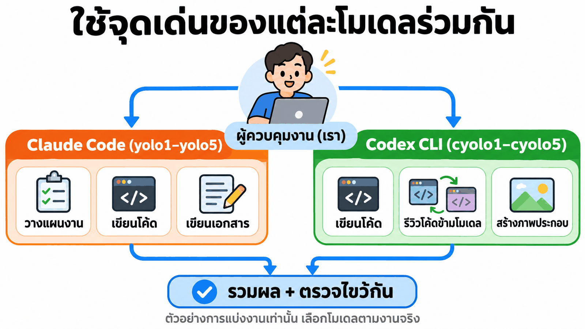
Claude กับ Codex ถนัดงานต่างกัน อยู่ใน container เดียวกันจึงส่งงานให้ตัวที่เหมาะได้ทันที
การแบ่งงานในภาพเป็นตัวอย่าง ควรทดลองเลือกโมเดลตามงานจริง
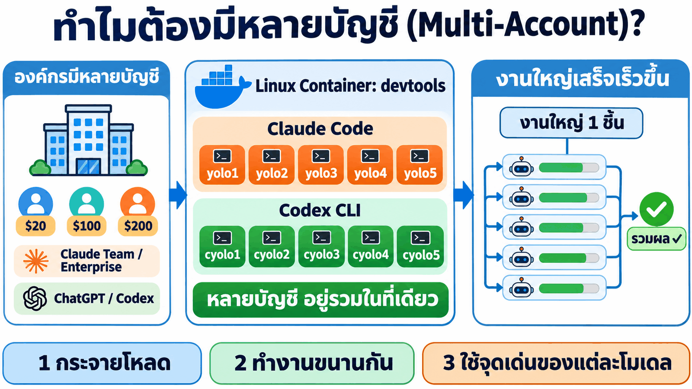
มี claude กับ codex แล้ว แต่ล็อกอินได้ทีละบัญชี ยังไม่มีโครงสร้างสำหรับหลายบัญชี
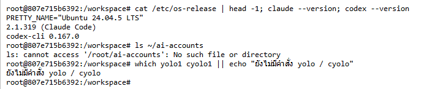
ls ~/ai-accounts → No such filewhich yolo1 cyolo1 → ไม่พบtuchsanai/devtools:2569_1 ไม่ได้ออกแบบมาให้มีหลายบัญชี เราจะเติมเองขณะที่ container ยังรันอยู่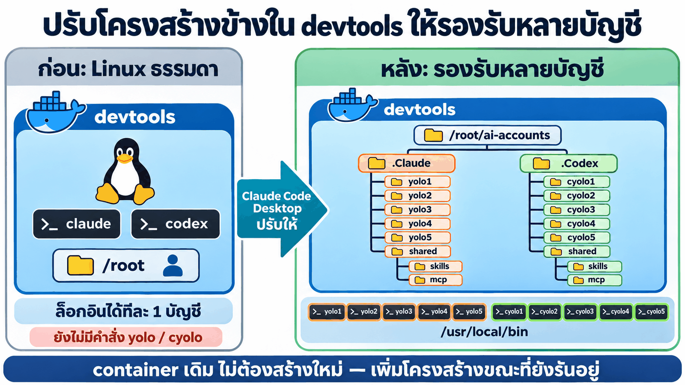
/root/ai-accounts และคำสั่งใน /usr/local/bin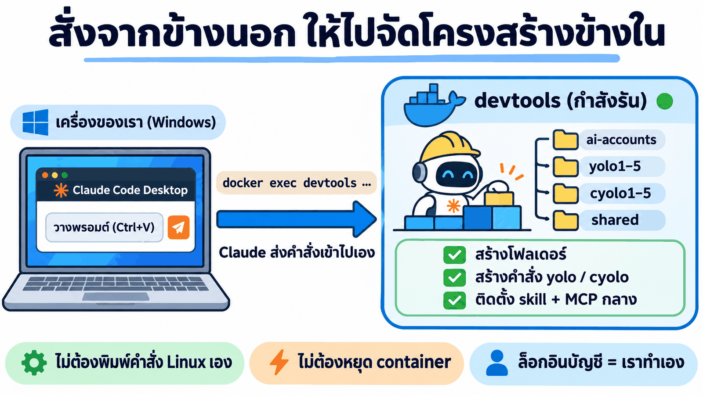
Claude Code Desktop บน Windows ตัวเดียวกับที่สร้าง container ในบทที่แล้ว
เราแค่วางพรอมต์ Claude ส่งคำสั่งเข้าไปเองด้วย docker exec devtools …
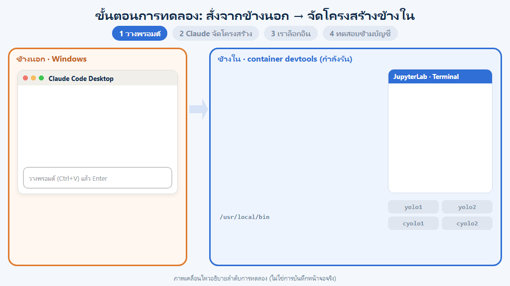
| ขั้น | ที่ไหน | ใคร |
|---|---|---|
| 1 ตั้งค่าหลายบัญชี | 💻 Desktop | Claude |
| 2 ตรวจผลข้างใน | 🖥️ JupyterLab | เรา |
| 3 ล็อกอิน + ตรวจ | 🖥️ → 💻 | เรา + Claude |
| 4 ทดสอบข้ามบัญชี | 💻 Desktop | Claude |
devtools กำลังรัน · Claude Code Desktop ล็อกอินแล้ววางพรอมต์เดียว → Claude ใช้ docker exec สร้างโฟลเดอร์ คำสั่ง yolo/cyolo ติดตั้ง skill และ MCP กลาง แล้วทดสอบเอง (~5–10 นาที)
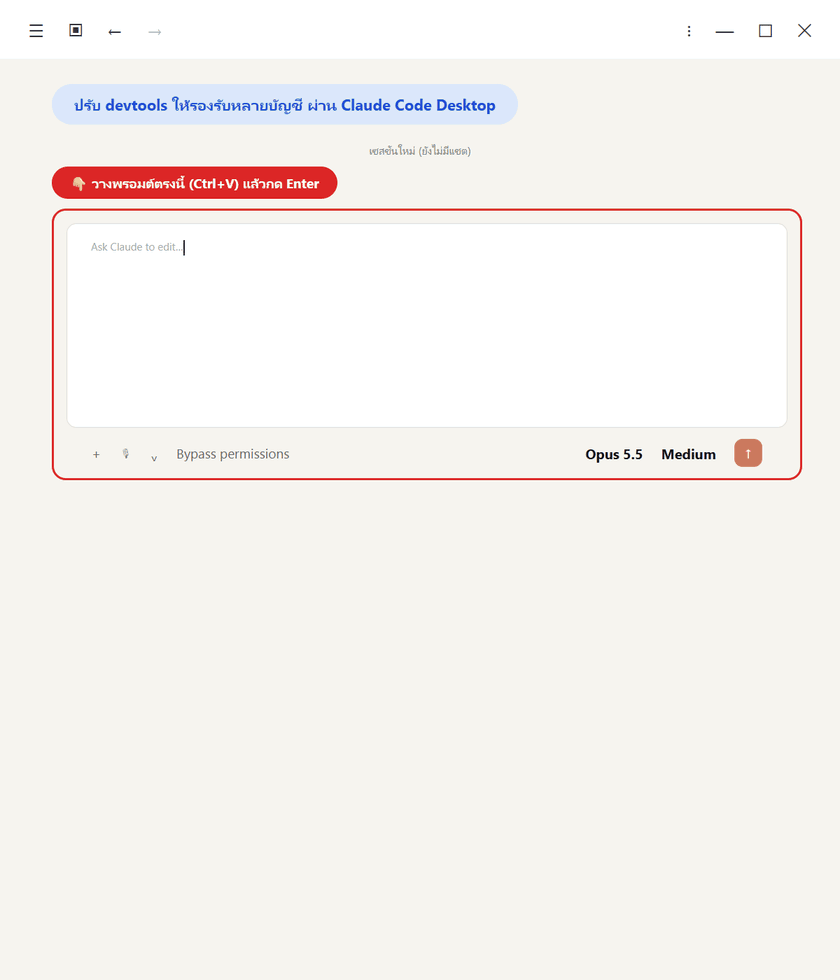
ช่วยปรับโครงสร้างข้างใน container ชื่อ devtools ที่กำลังรันอยู่ ให้รองรับหลายบัญชี AI
ทำทุกอย่างข้างใน container ผ่าน docker exec เท่านั้น ห้ามแก้ไฟล์บนเครื่อง Windows ห้ามหยุด ลบ หรือสร้าง container ใหม่
ถ้า devtools ไม่ได้รันอยู่ ให้รายงานแล้วหยุด
ข้างในมี Claude Code และ Codex CLI แล้ว ห้ามติดตั้งซ้ำ ตรวจ --version ก่อน
ตรวจ --help ของเวอร์ชันจริงก่อนใช้ env/flag ห้ามเดา
## เป้าหมาย (BASE=/root/ai-accounts)
- yolo1..yolo5 → claude --dangerously-skip-permissions (CLAUDE_CONFIG_DIR=$BASE/.Claude/yoloN)
- cyolo1..cyolo5 → codex --dangerously-bypass-approvals-and-sandbox (CODEX_HOME=$BASE/.Codex/cyoloN)
- wrapper วางใน /usr/local/bin ให้พิมพ์ได้ทันที ส่งต่อ "$@" ครบ แจ้งชัดถ้าโฟลเดอร์บัญชีไม่มี ไม่พิมพ์ secret
- $BASE/.Claude/shared และ $BASE/.Codex/shared มี skills/ และ mcp/ แก้ครั้งเดียว ทุกบัญชีของ CLI นั้นเห็นตอนเปิดครั้งถัดไป
## กติกา
- แยก credential/config/session ต่อบัญชี เปิดพร้อมกันได้ ใช้ CLAUDE_CONFIG_DIR/CODEX_HOME เท่านั้น ห้ามเปลี่ยน $HOME
- Codex ใช้ file-based credential ต่อ CODEX_HOME ห้ามแชร์ credential ใน shared
- สร้าง installer เป็นไฟล์ใน container รันซ้ำได้ ไม่เขียนทับ credential/config เดิม ห้ามแก้ .bashrc/Git/SSH
- MCP ส่วนกลางตัวแรก: Playwright (@playwright/mcp) + Chromium ติดตั้งครั้งเดียว
- skill ตัวอย่าง shared-check: ตอบ SHARED_SKILL_OK-<tool>-<ค่าสุ่มตอนติดตั้ง> ซึ่งมีในไฟล์ skill เท่านั้น
## ข้อเท็จจริงจากการทดลอง (ตรวจว่ายังจริงกับเวอร์ชันนี้)
- root ต้องตั้ง IS_SANDBOX=1; CODEX_HOME ต้อง mkdir -p ก่อน
- Claude: skill อ่านจาก $CLAUDE_CONFIG_DIR/skills; MCP ส่งผ่าน --mcp-config=<ไฟล์> (ต้องมี =)
ห้าม symlink .claude.json (มีสถานะล็อกอิน); claude mcp list ไม่แสดง MCP นี้ ให้ตรวจด้วย /mcp
- Codex: skill อ่านจาก $CODEX_HOME/skills และเขียน skills/.system เอง ห้าม symlink ทั้งโฟลเดอร์
MCP ส่งด้วย -c mcp_servers.<name>={...} (ใช้กับ codex mcp list ได้)
- Playwright ใน root container: --browser chromium --headless --isolated --no-sandbox และ --output-dir นอกโฟลเดอร์งาน
ติดตั้ง Chromium ด้วย playwright ในแพ็กเกจ @playwright/mcp ให้เวอร์ชันตรงกัน (อาจต้อง install-deps)
## ทดสอบใน container (PASS/FAIL/SKIP ตามจริง)
- 10 คำสั่ง --version ครบ, config root คนละโฟลเดอร์, installer รอบ 2 ไม่ทำลายของเดิม
- cyoloN mcp list เห็น playwright, skill shared-check ทุกบัญชี readlink -f ไปไฟล์เดียวกันใน shared
- อะไรที่ต้องล็อกอิน = SKIP
## รายงาน (ห้ามมี secret) เขียนไว้ใน container ที่ /workspace/multi-account/
- setup-report.md: โครงสร้างโฟลเดอร์, wrapper, แต่ละ CLI อ่าน skill/MCP จากไหน, ข้อจำกัด
- login-guide.md: ล็อกอินทีละบัญชีใน JupyterLab Terminal
- checklist.md: รายการ | หลักฐาน | PASS/FAIL/SKIP
เสร็จแล้วสรุปเป็นตารางสั้น ๆ แล้วหยุดรอ ห้ามล็อกอินแทนฉัน
yolo1–5 → Claude, cyolo1–5 → Codex แยกโฟลเดอร์ต่อบัญชี + shared สำหรับ skill/MCP
ทำผ่าน docker exec เท่านั้น ไม่แตะ Windows ไม่ลบ container ไม่แชร์ credential รันซ้ำได้
เช่น root ต้องตั้ง IS_SANDBOX=1 · flag ของ MCP · Playwright ต้อง --no-sandbox ให้ Claude ไม่ต้องลองผิดลองถูก
พิมพ์ yolo1 ได้ทันทีในทุก Terminal ไม่ต้องแก้ PATH
10 คำสั่ง --version · installer รอบ 2 ไม่ทำลายของเดิม · อะไรที่ต้องล็อกอิน = SKIP
ตาราง PASS/FAIL/SKIP + ไฟล์รายงานใน /workspace/multi-account/
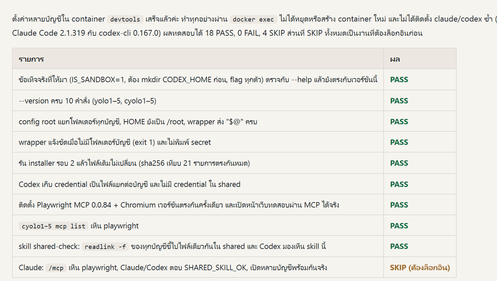
ระหว่างทาง Claude แก้ปัญหาเอง:
MSYS_NO_PATHCONV=1ข้อความคำตอบจริงของ Claude จัดหน้าใหม่ให้อ่านง่าย
Claude บอกว่าเสร็จแล้ว… เปิด JupyterLab ของ devtools ตรวจว่าคำสั่งใช้ได้ และโฟลเดอร์ตรงกับที่ออกแบบไว้
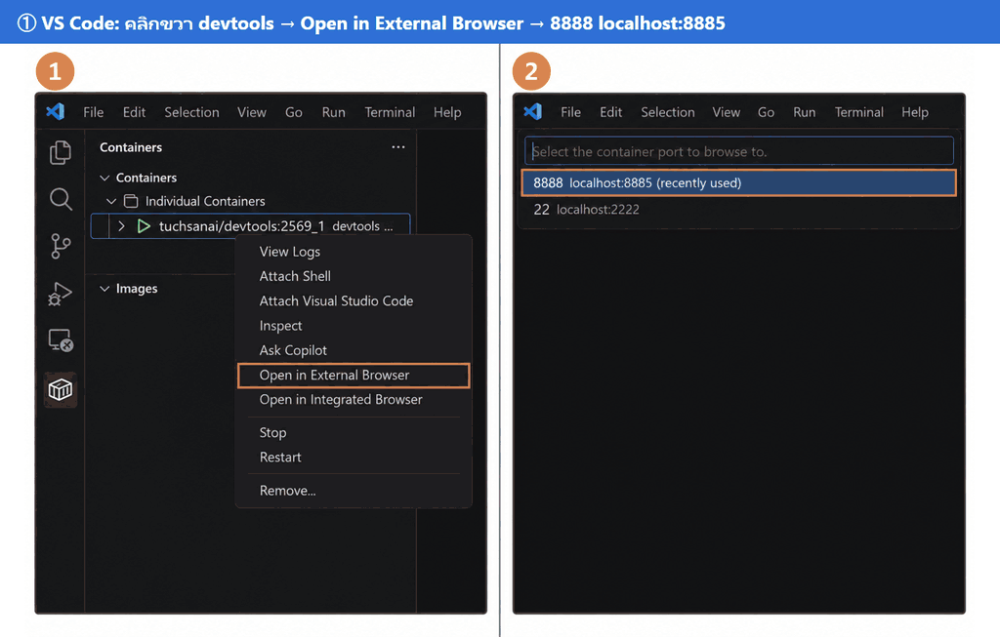
which yolo1 cyolo1 yolo1 --version; cyolo1 --version yolo2 --version; cyolo2 --version yolo3 --version; cyolo3 --version
ต้องเห็น /usr/local/bin/yolo1 และเวอร์ชันครบทุกบรรทัด
--version บอกแค่ว่าคำสั่งพร้อมใช้ ไม่ได้บอกว่าล็อกอินแล้ว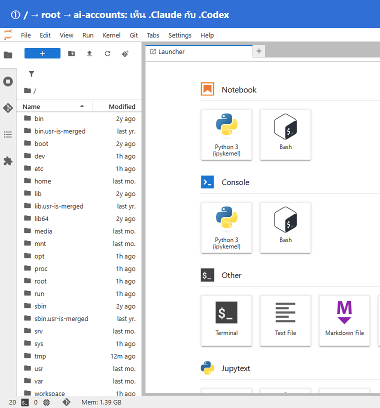
| โฟลเดอร์ | คืออะไร |
|---|---|
.Claude/yolo1…5 | ข้อมูลแต่ละบัญชี Claude (CLAUDE_CONFIG_DIR) ล็อกอิน การตั้งค่า ประวัติแยกกัน |
.Codex/cyolo1…5 | ข้อมูลแต่ละบัญชี Codex (CODEX_HOME) credential เป็นไฟล์แยกต่อบัญชี |
shared/skills shared/mcp | ของกลางที่ทุกบัญชีใช้ร่วมกัน ไม่มีข้อมูลล็อกอิน |
yolo1 = สคริปต์สั้น ๆ ที่เลือกโฟลเดอร์ yolo1 แล้วเปิด claude · การแยกนี้อยู่ใต้ผู้ใช้ Linux เดียวกัน ไม่ใช่การแยกสิทธิ์ OS
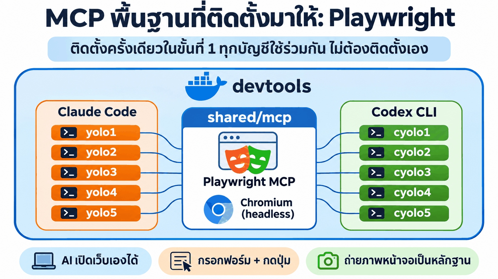
ติดตั้ง ครั้งเดียว ในขั้นที่ 1 อยู่ใน shared/mcp พร้อม Chromium แบบไม่มีหน้าจอ
yolo / cyolo ใช้ได้ทันทีขั้นเดียวที่ AI ทำแทนไม่ได้ · 1 บัญชี = 1 แท็บ Terminal · ยืนยันตัวตนในเบราว์เซอร์ด้วยตัวเอง
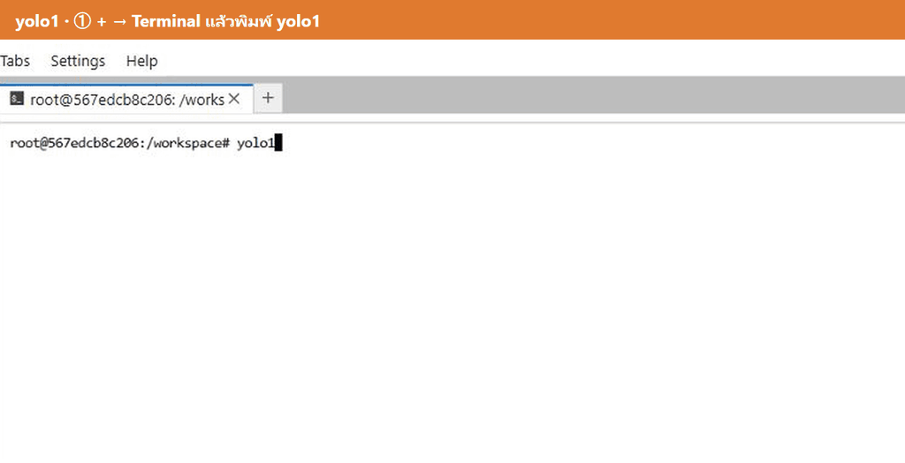
| พิมพ์ | เลือก |
|---|---|
yolo1… | Claude account with subscription → ยืนยันในเบราว์เซอร์ → Yes, I trust this folder → /model Fable · Medium |
cyolo1… | Sign in with ChatGPT (หรือ Device Code) → /model GPT-6-Astra · Medium |
ทำอย่างน้อย yolo1 yolo2 cyolo1 cyolo2 · เสร็จแล้ว /exit หรือ Ctrl+C
ช่วยตรวจสถานะล็อกอินทุกบัญชีใน container devtools ทำผ่าน docker exec เท่านั้น ห้ามล็อกอินแทนฉัน ห้ามแก้ไฟล์ใด ๆ - Claude: yolo1 ถึง yolo5 ใช้คำสั่ง yoloN auth status แล้วดูเฉพาะค่า "loggedIn" - Codex: cyolo1 ถึง cyolo5 ใช้คำสั่ง cyoloN login status สรุปเป็นตาราง บัญชี | ล็อกอินแล้ว/ยัง เท่านั้น ห้ามแสดงอีเมล ชื่อองค์กร หรือ token ถ้ามีบัญชีที่ยังไม่ล็อกอิน ให้บอกวิธีล็อกอินใน JupyterLab Terminal (พิมพ์ yoloN แล้วเลือก Claude account with subscription / พิมพ์ cyoloN หรือ cyoloN login --device-auth)
พรอมต์บอกคำสั่งไว้ให้แล้ว: yoloN auth status และ cyoloN login status และห้ามแสดงอีเมลหรือ token
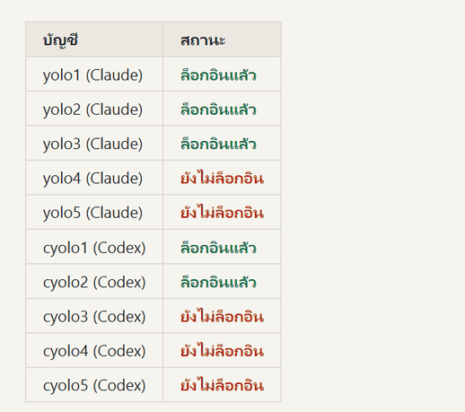
ทุกบัญชีเรียก skill กลาง shared-check และใช้ Playwright MCP เปิด Google Flights ค้น BKK → Tokyo เอง · ค้นหาอย่างเดียว ไม่จอง ไม่จ่าย
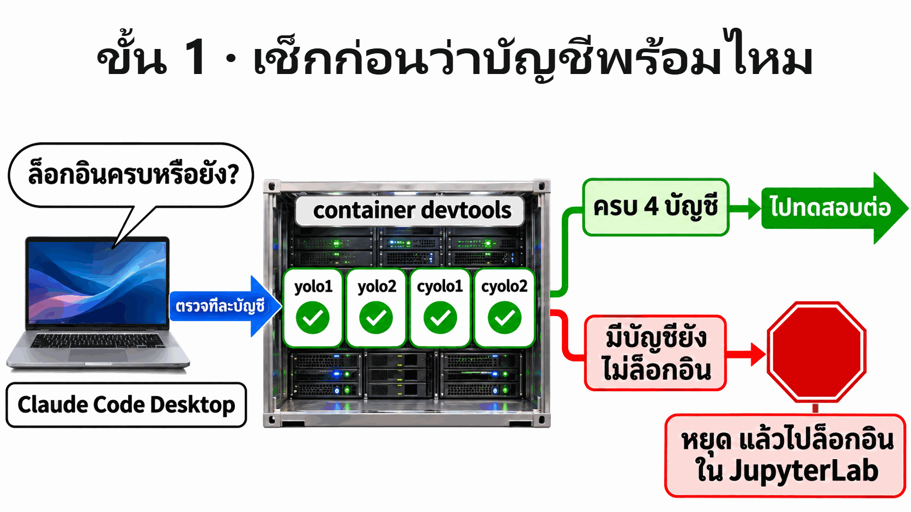
ทดสอบบัญชี yolo1 yolo2 cyolo1 cyolo2 ใน container devtools ผ่าน docker exec ห้ามล็อกอินแทนฉัน ห้ามแก้ไฟล์ตั้งค่า ขั้น 1 ตรวจล็อกอิน: ใช้ yoloN auth status และ cyoloN login status สรุปตาราง บัญชี | ล็อกอินแล้ว/ยัง ห้ามแสดงอีเมลหรือ token ถ้ามีบัญชีที่ยังไม่ล็อกอิน ให้หยุดแล้วบอกฉัน ขั้น 2 ให้ทีละบัญชีทำ "งาน" ข้างล่าง ในโฟลเดอร์ /workspace/multi-account (timeout บัญชีละ 15 นาที) ใช้คำสั่ง yoloN -p "งาน" หรือ cyoloN exec --skip-git-repo-check "งาน" โดยแทน NAME ด้วยชื่อบัญชี งาน: ใช้ skill shared-check แล้วบอกรหัสที่ได้ จากนั้นใช้ Playwright MCP เท่านั้น เปิด https://www.google.com/travel/flights?hl=en ค้นเที่ยวบินเที่ยวเดียว BKK ไป Tokyo วันที่ 15 ของเดือนหน้า ค้นหาอย่างเดียว ห้ามจอง แล้วบันทึกภาพหน้าผลค้นหาเป็น /workspace/multi-account/evidence/NAME.png และบอกเที่ยวบินอันดับ 1 ถ้าเว็บ error ให้บอกตามจริง ขั้น 3 บัญชีไหนเว็บ error ให้รันบัญชีนั้นซ้ำอีก 1 รอบ แล้วสรุปตาราง บัญชี | รหัส shared-check | เที่ยวบินอันดับ 1 | PASS/FAIL
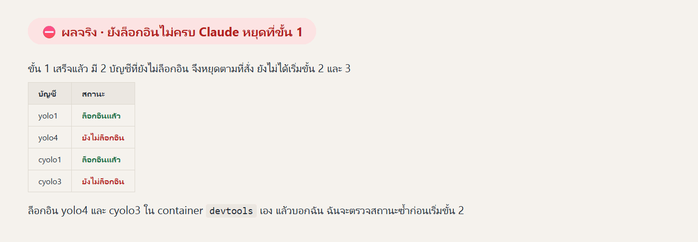
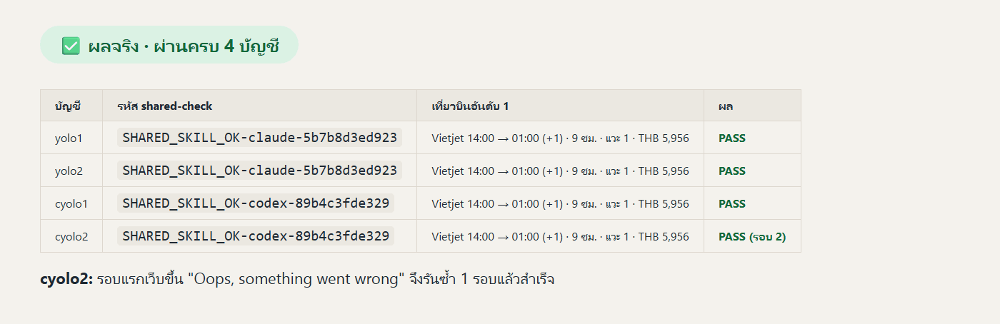
…claude-5b7b8d3ed923 · cyolo1 = cyolo2 ได้ …codex-89b4c3fde329 → อ่านจากไฟล์เดียวกันใน shared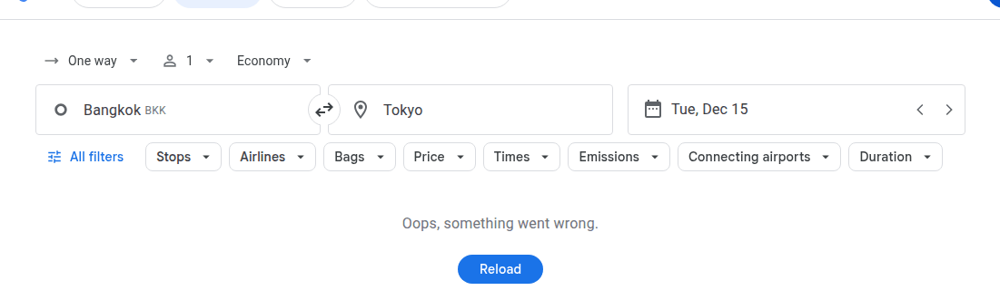
| บัญชี | ผล |
|---|---|
| yolo1 | PASS |
| yolo2 | PASS |
| cyolo1 | PASS |
| cyolo2 | รอบ 1 เว็บ error → รอบ 2 PASS |
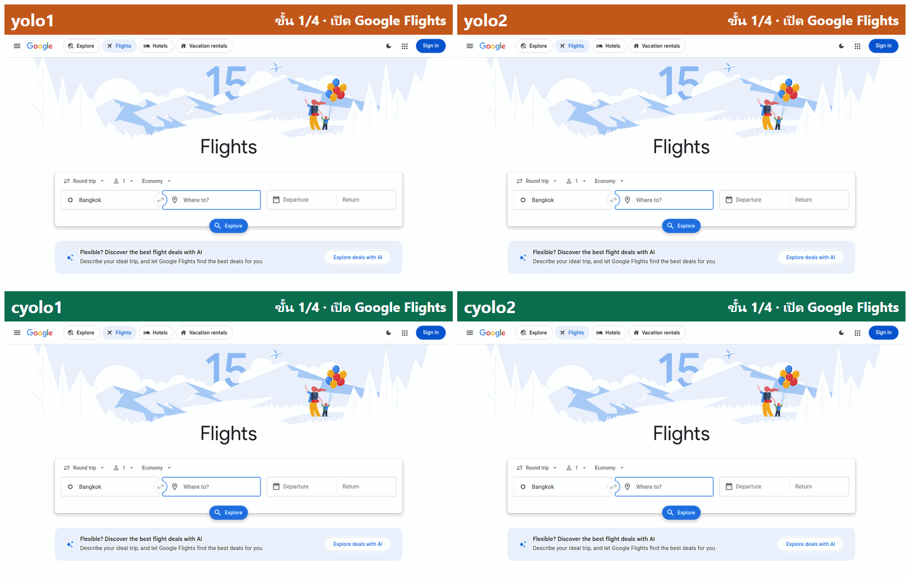
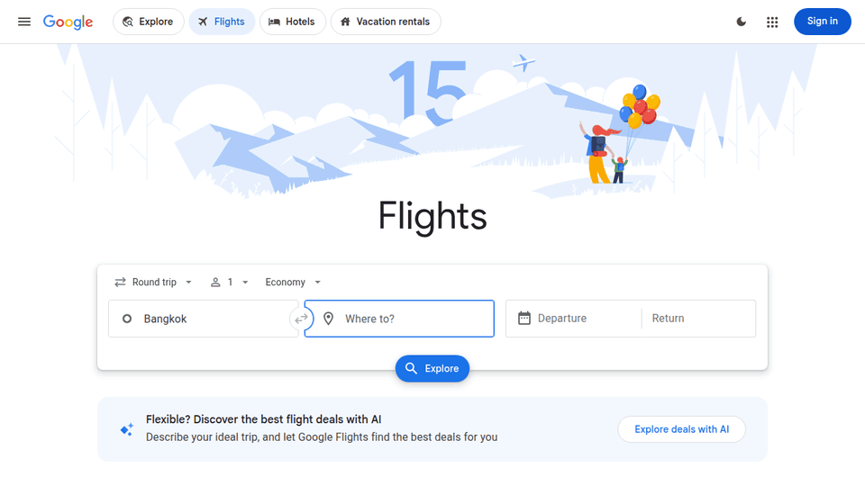
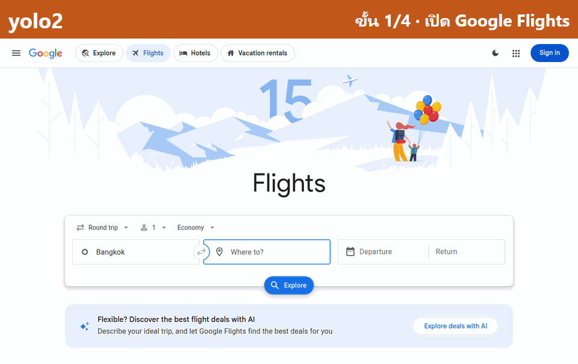
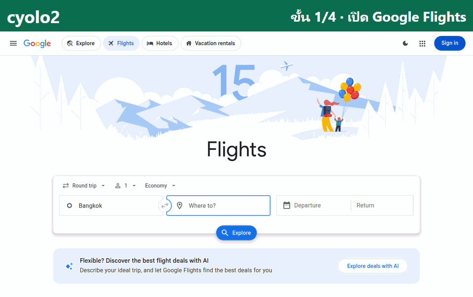
คลิกช่องเพื่อติ๊กระหว่างเรียน (ไม่บันทึกถาวร)
| อาการ | สาเหตุและวิธีแก้ |
|---|---|
| Claude บอกว่า devtools ไม่ได้รัน | เปิด container ใน VS Code แถบ Containers (Start) หรือดูบทที่แล้ว แล้ววางพรอมต์เดิมอีกครั้ง |
yolo1: command not found | ขั้นที่ 1 ยังไม่สำเร็จ ดูตารางสรุปของ Claude ว่าข้อไหน FAIL แล้วให้ Claude แก้ต่อ |
--version ได้ แต่ใช้งานไม่ได้ | ยังไม่ได้ล็อกอิน ใช้พรอมต์ตรวจล็อกอินในขั้นที่ 3 |
| Codex ล็อกอินในเบราว์เซอร์แล้วไม่กลับมา | เลือก Sign in with Device Code หรือพิมพ์ cyolo1 login --device-auth |
| Google Flights ขึ้น "Oops, something went wrong." | เว็บภายนอกล่มชั่วคราว รันเฉพาะบัญชีนั้นซ้ำ |
| รหัส shared-check ไม่ตรงกันในบัญชี CLI เดียวกัน | skill ไม่ได้ลิงก์ไป shared ให้ Claude รัน installer ซ้ำ (รันซ้ำได้ ไม่ทำลายของเดิม) |